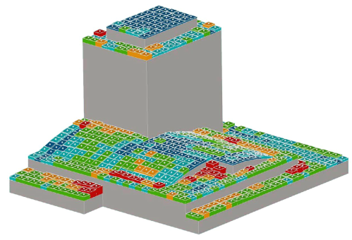

물리적 모델링
적설 패턴 테스트
RWDI는 건물 형상이 복잡하거나 국부적인 적설 거동이 중요한 경우, 적설 패턴을 정밀하게 평가하기 위해 물리적 모델을 활용한 시험을 수행합니다. 눈과 바람의 물리적 거동은 모래와 물의 거동과 유사하다는 점에 착안하여, 수조(water flume)에서 특수 모래를 사용해 눈보라와 적설 이동 과정을 실제와 유사하게 시뮬레이션합니다. 이러한 물리 모형 시험을 통해 수치해석만으로는 파악하기 어려운 국부적인 적설 집중, 와류에 의한 퇴적, 복잡한 형상 주변의 비선형 거동을 정밀하게 확인할 수 있습니다. 이를 바탕으로 건물 각 부위에 작용하는 적설 분포를 정량화하고, 구조 설계에 활용 가능한 적설하중을 합리적으로 산정합니다. 이를 통해 설계 단계에서 잠재적인 과적설 위험과 낙설·낙빙 가능성을 사전에 식별하고, 형상 조정이나 설계 대안을 통해 위험을 효과적으로 저감할 수 있습니다. 결과적으로 구조 안전성과 사용성을 확보하는 동시에 과도한 설계를 방지하여, 안전성과 경제성을 모두 고려한 최적의 적설 대응 설계를 가능하게 합니다.
- 기술 특수 모래를 이용한 수조 실험
- 적용 복잡한 설계 및 눈보라 시뮬레이션


시각화된 적설하중 물리 모형 실험(좌) 및 수치해석 결과(우)